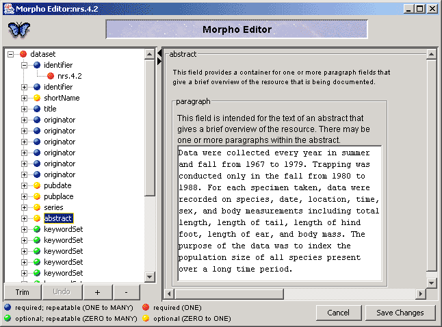
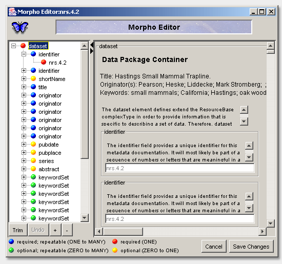
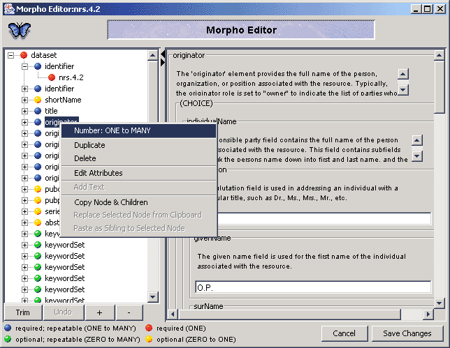

Morpho
User Guide
|
Morpho
User Guide
|
||||||
| KNB Home | Data | People | Informatics | Biocomplexity | Education | Software | |
| Morpho Editor |
| The metadata editor is used to display and
possibly edit all the details of the structured metadata documents used
by Morpho. Several examples of editor windows are shown below:
Each type of data description document (i.e each metadata type) has some structure which is indicated by the hierarchical outline on the left. Item in the outline are color coded to indicate which items are required and which can be repeated. When an item in this outline is selected, a form based view of the information that is contained in the selected item is shown on the right side of the window. A 'right-click' on any item in the outline displays a popup menu (as shown below) which allows the user various actions. These include duplicating an item, deleting an item, or copy and pasting items. Note that all of these operations include not only the selected item, but also all of the item's 'children' in the indicated hierarchy. Most of the fields on the right side of the editor screen are editable. One can just click on the field of interest and enter text. The 'tab key' will move the selection to the next editable field. Note that non-required fields that are empty will not be saved when changes are made, but will appear again as empty fields when the document is opened again in the editor.    Technical Notes:
|